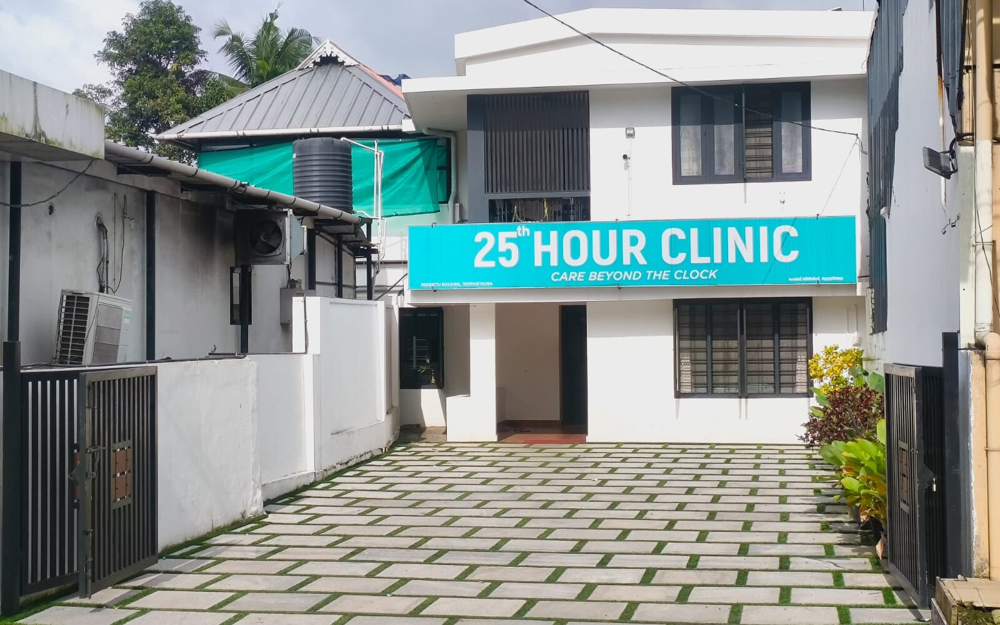

Physician Consultation
General medicine consultation for fever, infections, blood pressure, diabetes, and everyday health concerns — with unhurried time to actually explain what is going on.
Thrippunithura, Kochi
A neighbourhood medical clinic for everyday physician consultation, and doctor home care visits for palliative patients — delivered with dignity, at a price families can actually afford.
What we do
Come to the clinic, or let the clinic come to you.
General medicine consultation for fever, infections, blood pressure, diabetes, and everyday health concerns — with unhurried time to actually explain what is going on.
A doctor visits the patient at home — for those who cannot travel, for bed-bound and elderly patients, and for ongoing review of treatment already in progress.
Comfort-focused care for patients with long-term or advanced illness — symptom and pain relief, medication review, and guidance for the family caring for them.
Continuing care between visits — reviewing reports, adjusting medication, and keeping one doctor accountable for the whole picture.
Home care
For palliative patients, every trip to a hospital costs something — pain, exhaustion, dignity, money. Our home care service brings the consultation to the bedside instead.
The team
You will be seen by a qualified physician — every time.
MBBS, MD — General Medicine
Consultant Physician — general medicine consultation and chronic disease care.
MBBS
Clinic consultation and home care visits. Read her full profile →
MBBS
Clinic consultation and palliative home care visits. Read his full profile →
Where we go
The clinic sits on Main Road, Thrippunithura. Our doctors travel out from here for home visits across Thrippunithura, the Kakkanad–Infopark side, and the villages towards Udayamperoor and Chottanikkara.
Walk-in distance or a short drive from the clinic.
Home visits by appointment, usually same or next day.
Covered for home visits; please call to confirm a slot.
A short run down the bypass from the clinic.
Not on the list? We still may be able to come — most of Ernakulam district within about 15 km of Thrippunithura is workable. Call +91 82814 47235 and tell us the location, and we will say plainly whether we can reach you.
Our clinic
Pokkattu Building, Main Road, Thrippunithura — opposite Nadamel Church.



Book on WhatsApp
Fill in the details below and tap send — WhatsApp opens with your message already written out for the clinic. Nothing is stored on this website.
Visit us
Common questions
We are at Pokkattu Building, Main Road, opposite Nadamel Church, Thrippunithura, Kochi, Kerala. The clinic is easy to reach from Hill Palace, Eroor, Petta, Vyttila and Irumpanam.
The clinic is open all days from 9:00 AM to 9:00 PM, including Sundays. Walk-in consultations are welcome; home visits are arranged by appointment.
Yes. A doctor visits the patient at home, by appointment, across Thrippunithura and nearby parts of Kochi and Ernakulam. Home visits are intended for palliative patients, bed-bound and elderly patients, people recovering after hospital discharge, and anyone who cannot travel to a clinic. Call +91 82814 47235 to check whether your location is covered.
Around the clinic: Thrippunithura, Karingachira, Thekkumbagam, Eroor, Hill Palace, Petta, Vadakkekotta, Irumpanam, Poonithura and Kannankulangara. Towards the east and south: Udayamperoor, Thiruvankulam, Chottanikkara, Mulanthuruthy, Kureekkad, Amballoor, Aikaranad, Pattimattom, Puthencruz and Vadayampady. On the Kakkanad side: Kakkanad, Infopark, Thrikkakara, Vazhakkala, Padamugal, Kangarappady, Chittethukara, Palachuvadu and Palarivattom. Down the bypass: Vyttila, Maradu, Kundannoor, Nettoor, Panangad, Kumbalam, Kadavanthra, Elamkulam, Edappally and Kaloor. See areas we serve for the full list.
Yes. Kakkanad, Infopark, Thrikkakara, Vazhakkala, Padamugal, Kangarappady, Chittethukara and Palachuvadu are all within our home-visit range from Thrippunithura. Please call +91 82814 47235 to fix a slot — travel time on that side varies a lot with traffic.
Yes. Udayamperoor, Thiruvankulam, Karingachira and Thekkumbagam are close to the clinic, so home visits there are usually arranged the same day or the next day.
Call or WhatsApp +91 82814 47235, or use the booking form on this page — it opens WhatsApp with your details already written out for the clinic.
No. You can walk in during consultation hours. Booking ahead simply means less waiting, and it is required for home visits.
The doctor reviews the patient at home: assessing pain and other symptoms, rationalising medication, checking on nutrition and wounds where relevant, and advising the family on day-to-day care. The aim is comfort and dignity rather than repeated hospital journeys.
Dr. Ammu Benoy (MBBS, MD General Medicine), Dr. Limiya Chiramel Louis (MBBS) and Dr. Paul Prince Pokkatt (MBBS). See our doctors for details.
Yes — we are open all seven days of the week, 9:00 AM to 9:00 PM.
Something not answered here? Call us on +91 82814 47235 — we are happy to explain before you book.
We are open all days, 9:00 AM to 9:00 PM. Call or message to book a consultation or arrange a home visit.